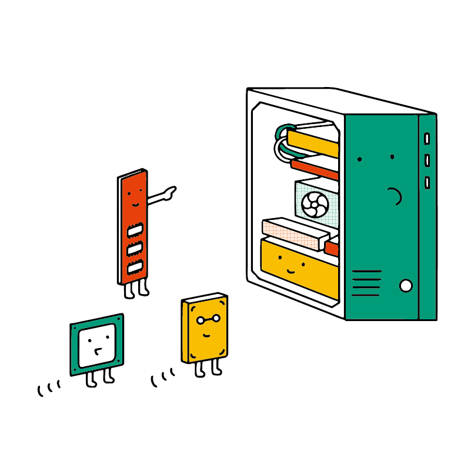
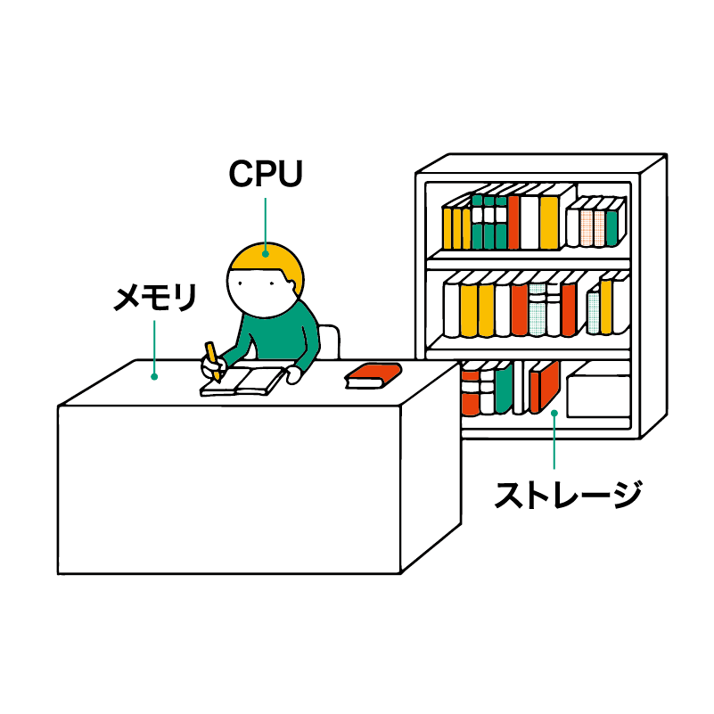
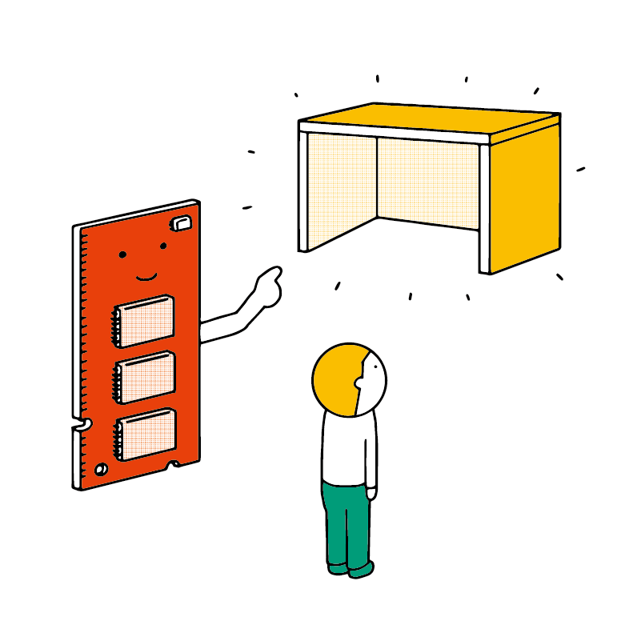
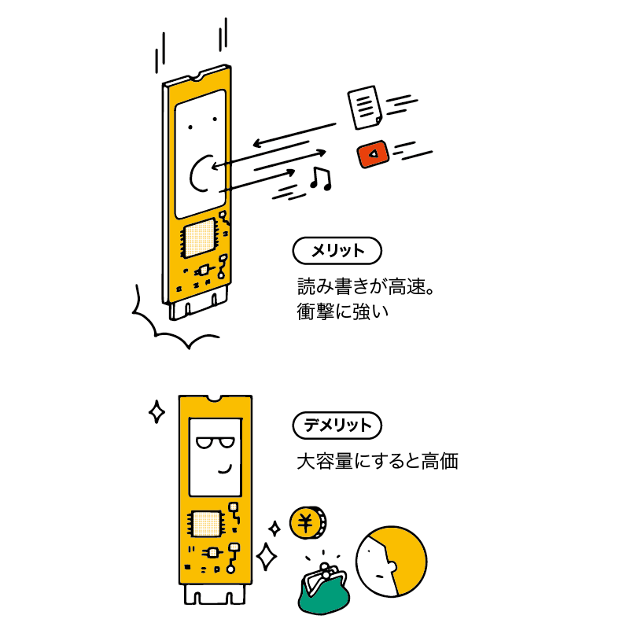
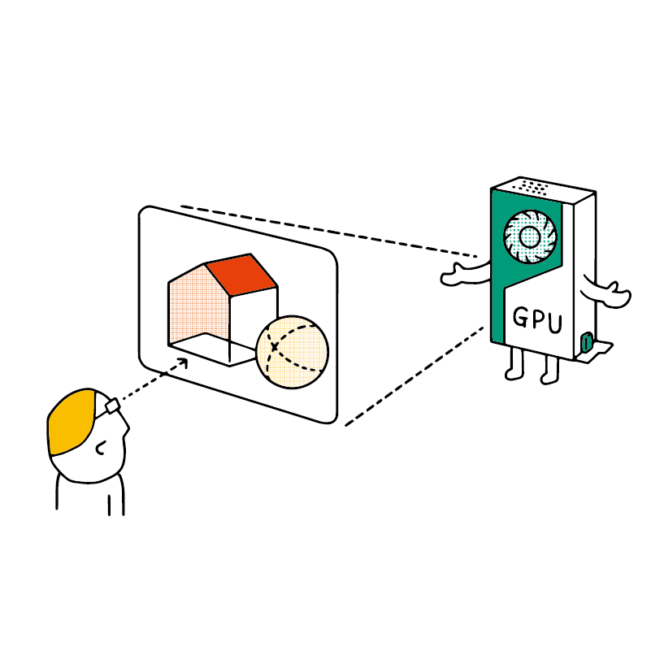
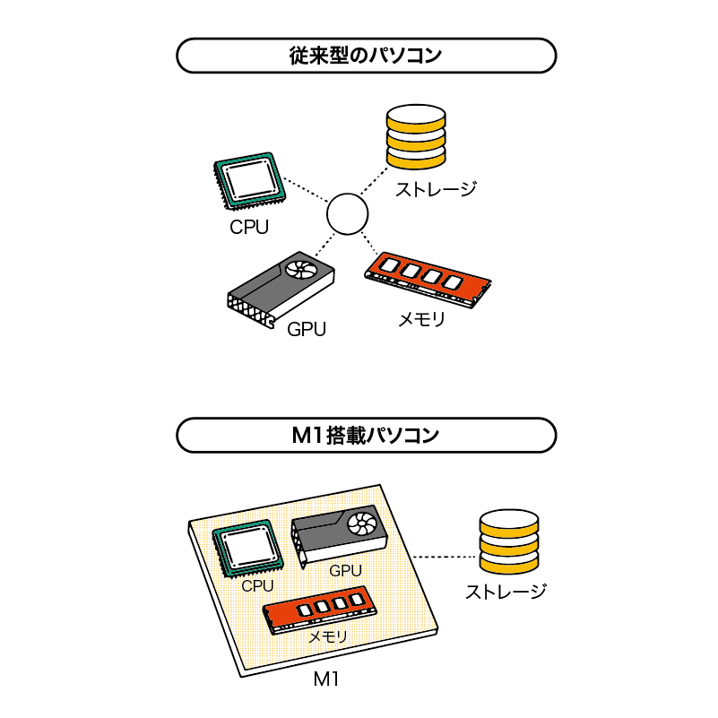

パソコンの中身を見てみよう
前回はパソコンの分類を学び、外見を確認しました。今回はパソコンの中にある部品と、その役割をちょっとだけ見てみましょう。
パソコンを構成する部品
パソコンは様々な部品を組み合わせて作られています。これらは「机で仕事をする人」に例えられます。
製品によって使われる部品に違いはありますが、以下の部品はすべてのパソコンに入っています。
- CPU
- メモリ
- ストレージ
- GPU
では、それぞれの部品の特徴を見ていきましょう。
CPU
CPU（シーピーユー）とは、パソコンの頭脳に当たる部品です。 Central Processing Unit（セントラル・プロセッシング・ユニット、中央演算処理装置）の略称です。プロセッサ と呼ばれることもあります。
パソコンで何かをすると、ほぼ全ての場合で CPU が動作しています。
メモリ
メモリは、処理をするためのアプリやデータを一時的に置くための部品です。
CPUを頭脳とすると、机のようなものです。
机が広ければ広いほど、一度に多くのデータを広げられるので、スムーズに処理ができます。机が狭い場合、多くのデータを載せられなくなり、処理速度が低下します。
ストレージ
ストレージ とは、プログラムやデータを記録する部品です。
メモリと違い、作業ではなく 保存 のために使用されます。例えるならば本棚や倉庫のようなものです。
ストレージは主に 2 種類に分けられます。
HDD（ハードディスク・ドライブ）
磁気を用いてデータを記録します。内部には磁気ディスク（円盤）が重ね合わせた状態で入っています。
- メリット: 安価で大容量。
- デメリット: 読み書きする速度が遅い。落下などの衝撃が加わるとデータが消失する恐れがある。
SSD（ソリッド・ステート・ドライブ）
電子回路にデータを記録します。
- メリット: 読み書きが高速。衝撃に強い。
- デメリット: 大容量にすると高価。
一般的なノートパソコンの場合、SSD か HDD のどちらか 1 種類だけを搭載しています。
高性能なパソコンでは、両方を搭載して「高速に起動させたいアプリの保存先はSSD、大容量の動画を保存するのは HDD」のように使い分けができる製品もあります。
GPU
GPU （ジーピーユー） とは、画像（特に3D）に特化した処理を行う部品で、Graphics Processing Unit（グラフィックス・プロセッシング・ユニット）の略称です。
元々はゲームなどの CG（コンピューター・グラフィックス）を高速で処理するために開発されています。
CPU、メモリ、ストレージはどんな使い方をする場合でも重要ですが、GPU のパワーが必要な状況は限られています。
- 3D や VR のゲームをプレイする場合
- 3DCG（コンピューター・グラフィックス）や映像などを制作する場合
- 人工知能の開発をする場合
こういったパソコンの使い方をする人は GPU の性能にこだわる必要があります。
逆に、ネットを閲覧したり、パソコンを普段の勉強に使ったりという程度であれば、GPU のスペックを気にする必要性はありません。
Apple M1 チップ
2020 年 11 月に Apple 社から発売された新しい Mac には、M1（エムワン）と呼ばれる新しい部品が搭載されています。
M1 では、従来は別々に存在していた CPU、GPU、メモリが 1 つの部品にまとめられました。
これにより、部品同士でのデータのやり取りが高速になる上、消費電力が減ってノートパソコンのバッテリー持ちが良くなるというメリットがあります。
簡単に言ってしまえば、高性能で省電力という夢のような部品です。
ただし、従来の部品とは仕組みが大きく異なります。そのため、従来の Mac 用に作られたアプリの中には M1 を搭載した Mac では動かないものもあります。
M1 を搭載した Mac と、従来型の Mac や Windows は別物 と考えましょう。また、M1 を搭載した Windows パソコンは現時点では存在していません。
数年以内に、今後発売される Mac はすべて M1 が搭載される予定になっています。
それに伴い、対応するアプリなども増加していくでしょう。
自分のパソコンに入っている部品を見てみよう
では、自分のパソコンに入っている部品を見てみましょう。といっても、パソコンを分解する必要はありません。
パソコンは「どういったパーツが組み込まれているのか」を認識しているため、画面を操作するだけで装備されている部品の名前を見られます。
この手順を知っておくと、家電量販店でパソコンを選ぶときや、会社や学校のパソコンの性能を確認するときにも役立ちます。
Windows の場合
まずは Windows での手順を確認してみましょう。
画面の一番下に表示されている タスクバー から、左端の スタートボタンをクリックします。
スタートメニューが開いたら 何もクリックせず、キーボードを使って 「dxdiag」 と半角アルファベットで入力します。
青い丸の中に黄色いバツ印が描かれたアイコンが表示されたら、開く をクリックします。
少し時間がかかるかもしれませんが、しばらくすると DirectX 診断ツール という画面が表示されます。
たくさん表示されている内容があってビックリするかもしれませんが、今回見るべき場所は
- システム モデル
- プロセッサ
- メモリ
だけです。
システムモデル は パソコンの製品名です。
プロセッサ は CPU のことです。
メモリ は MB（メガバイト）という単位で表示されているので、電卓を使って 1024 で割ると、GB（ギガバイト）という単位での数値になります。
続いて、GPU も見てみましょう。
DirectX 診断ツールの画面の上部にある ディスプレイ をクリックします。
ここで、左上の デバイス の欄の、 名前 のところに表示されているのが GPU の製品名です。
確認が終わったら DirectX 診断ツールを終了させましょう。
Mac の場合
続いて、Mac での手順を確認してみましょう。
画面左上の リンゴマーク をクリックし、このMacについて をクリックします。
プロセッサ と メモリ、グラフィックス（GPU） の欄に、部品名と容量が確認できます。なお、M1 の場合は CPU と GPU が統合されているため、まとめて チップ として表示されます。
（また、M1 以外でグラフィックスが表示されない場合、ディスプレイ をクリックすると確認できます。）
部品の交換・増設
メモリやストレージは、規格が同じものであれば交換・増設することによってパソコンの性能を上げられます。
しかし、最近のノートパソコンの多くは、中に入っている部品の交換・増設ができないようになっています。
そういったパソコンの場合、「部品を交換して性能を上げる」ということができず、性能を上げたい時はパソコン自体を買い換える必要があります。
自分のパソコンが交換・増設に対応しているかどうかは、取扱説明書やメーカーの Web サイトなどで確認できます。
ここで紹介した部品は、「PCパーツ」として単体でも販売されています。
パーツを 1 つずつ買い集め、自分で組み立てることによって自分だけのオリジナルパソコンを作り上げられます。これを「自作パソコン」といいます。
もちろん上級者向けですが、細かい部品までこだわりたいプロやマニアの間では人気です。
まとめ
- パソコンは様々な部品を組み合わせて作られている。
- CPU
- パソコンの頭脳。
- クロック周波数が大きいほど処理が速い。
- コア数が多いほど同時に複数の処理ができる。
- メモリ
- 机にあたるもの。
- 容量が大きいほど作業がスムーズ。
- データを保存する場所ではない。
- ストレージ
- 本棚や倉庫にあたるもの。
- データを保存しておく場所。
- SSD（高速、高価）とHDD（安価、大容量）がある。
- GPU
- 画像処理専門の部品。
- 3D ゲームをする場合などに重視する必要がある。
- 通常の用途ならそこまで気にしなくても大丈夫。
- M1
- 新しい Mac に搭載されている部品。
- CPU、GPU、メモリが統合されている。
- 高性能で省エネルギーだが、まだ動かないアプリもある。
- 今後、Mac では主流になっていく。